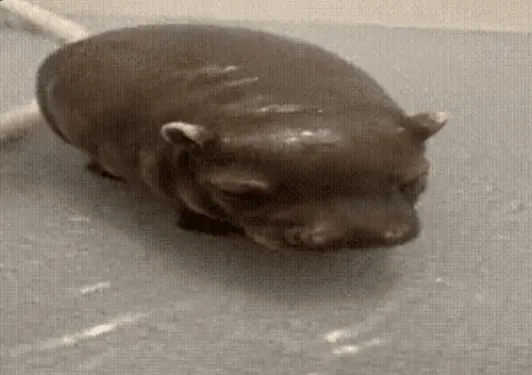
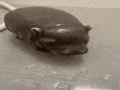

wikipedia spalone sprzenglo
| pipotam | |
|---|---|
|  | Hipopotam (Hippopotamus) – rodzaj ssaków parzystokopytnych z podrodziny Hippopotaminae w obrębie z rodziny hipopotamowatych (Hippopotamidae). Rodzaj obejmuje jeden współcześnie występujący gatunek występujący w Afryce. |
|  | dziki pipotam |